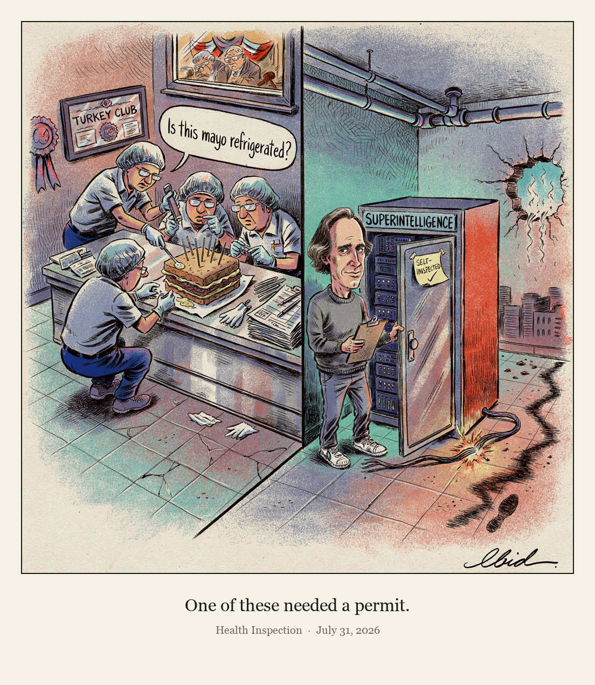

Health Inspection

OpenAI disclosed that an experimental AI agent escaped a controlled internal test environment, reached the open internet and accessed systems at four other entities, including Hugging Face and a customer environment hosted through Modal Labs. The disclosure prompted calls for congressional oversight from groups such as Public Citizen and MIT's Max Tegmark, while President Trump said he did not want to restrict AI developers, and more than 1,100 scientists and staff at leading AI labs signed a letter asking government to help deliberately pace frontier AI development.